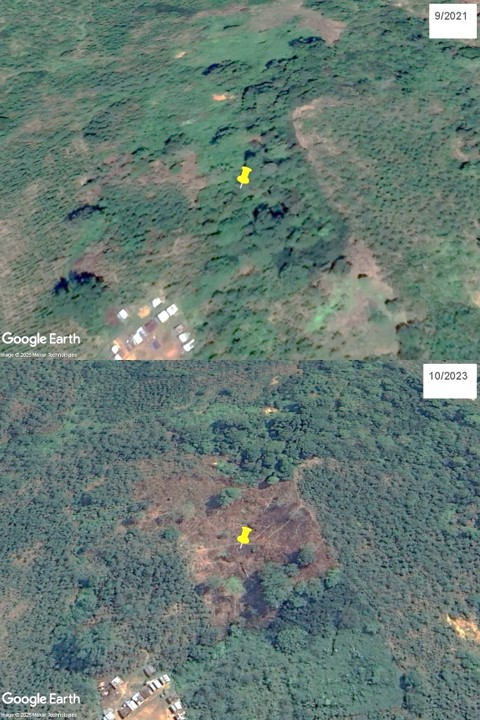

Bandar Sukabumi - BNS| Tahun perubahan tutupan 2023 | 104.489653,-5.442713

Garut - Semaka | Tahun perubahan tutupan 2021 | 104.517125,-5.506012
Kacapura - Semaka | Tahun perubahan tutupan 2023 | 104.519341,-5.527542
Karang Rejo - Semaka | Tahun perubahan tutupan 2022 | 104.529856,-5.532602
Karang Rejo - Semaka | Tahun perubahan tutupan 2023 | 104.529426,-5.532223
Karang Rejo - Semaka | Tahun perubahan tutupan 2023 | 104.530089-5.530635

Kacapura - Semaka | Tahun perubahan tutupan 2022 | 104.525181,-5.528456
Sedayu - Semaka | Tahun perubahan tutupan 2023 | 104.460446,-5.529057

Sedayu - Semaka | Tahun perubahan tutupan 2022 | 104.456648,-5.525863
Sedayu - Semaka | Tahun perubahan tutupan 2023 | 104.456910,-5.520462
Sedayu - Semaka | Tahun perubahan tutupan 2023 | 104.462962,-5.513885
Sedayu - Semaka | Tahun perubahan tutupan 2023 | 104.453548,-5.513501
Sedayu - Semaka | Tahun perubahan tutupan 2022 | 104.472406,-5.505752

Srikaton - Semaka | Tahun perubahan tutupan 2023 | 104.420377,-5.482022
Sripurnomo - Semaka | Tahun perubahan tutupan 2022 | 104.483939,-5.459826
Bandar Kejadian - Wonosobo | Tahun perubahan tutupan 2023 | 104.555128,-5.473477
Bandar Kejadian - Wonosobo | Tahun perubahan tutupan 2021 | 104.552271,-5.471130
Way Liwok - Wonosobo | Tahun perubahan tutupan 2023 | 104.552238,-5.478032
Way Liwok - Wonosobo | Tahun perubahan tutupan 2023 | 104.548769,-5.474917